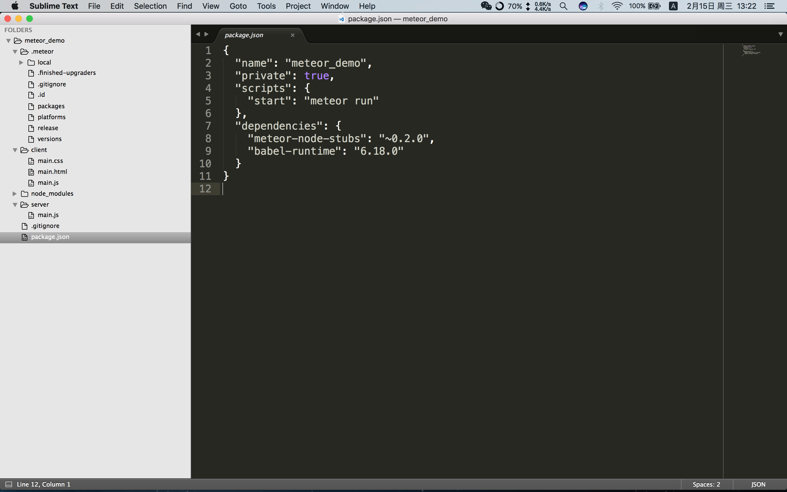

metoer 框架是基于 Node.js 的适用于全栈的框架。该框架可以代码可以前后端通用，也可以构建 APP，但依赖包需要使用 meteor 进行安装，在开发中兼容 npm 第三方包会需要一些简单的操作，详见Meteor 完整的npm集成。目前找到的比较完善的Meteor中文文档。官网地址。
安装并运行 Meteor
- macos & linux1$ curl https://install.meteor.com | sh
安装完成后会得到一个 meteor 命令行工具
- 生成一个简单的项目骨架1$ meteor create meteor_demo
类似于 express-generator。执行
meteor create meteor_demo命令之后会生成一个简单的能够
运行的项目demo。
- 生成后的项目目录结构
- /server 文件夹中的代码只会在服务器端运行。
- /client 文件夹中的代码只会在客户端运行。
- /.meteor 文件夹中的文件是meteor来维护的，我们不必过多关注。

实际上还生成了一个 package.json 文件，安装代码运行所需的 babel-runtime 和内置模块
meteor-node-stubs
- 运行项目123$ cd meteor_demo$ npm install$ meteor
浏览器访问 http://localhost:3000/

添加安装包
与其他基于 Node.js 的框架不同， meteor 本身管理着该框架内所需的依赖包。因为该框架的代码需要
运行在服务端和客户端。
- 添加 bootstrap 包和 underscore 包
|
|
twbs:bootstrap 是由 twbs 作者维护，全名为 twbs:bootstrap, underscore 是官方包。
解决 meteor add ian:accounts-ui-bootstrap-3 运行问题
|
|